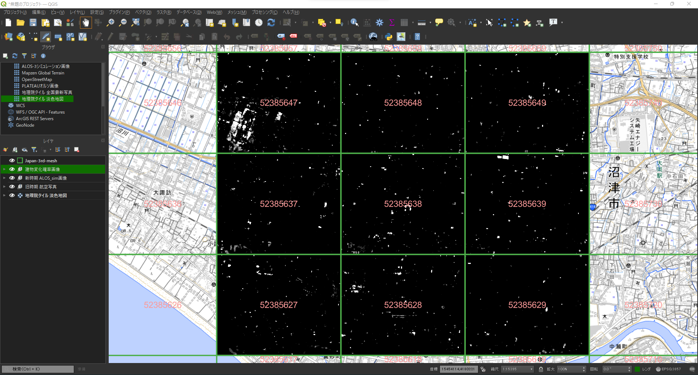

変化検出の実行
概要
本ページでは、深層学習モデルを用いて旧時期航空写真と新時期ALOS-3衛星（シミュレーション）画像から建築物の変化確率画像を生成します。
STEP1: 建築物の変化確率画像の生成
以下のコマンドを実行して旧時期画像と新時期画像から建築物の変化確率画像を生成します。
python generate_probmap.py
STEP2: 生成した建築物の変化確率画像の確認
lsコマンドで更新優先度マップ作成の条件設定にて設定した画像の保存先にTIFF形式の画像が生成されていることを確認します。
(update_priority_map) root@e5c04beb7310:/workspace/data/sample/probmap# ls
52385627.tif 52385628.tif 52385629.tif 52385637.tif 52385638.tif 52385639.tif 52385647.tif 52385648.tif 52385649.tif
(update_priority_map) root@e5c04beb7310:/workspace/data/sample/probmap#
Tip
GISが使える方は、指定した範囲の3次メッシュコードのポリゴンとともに生成した建築物の変化確率画像を表示して、確認することも可能です。
